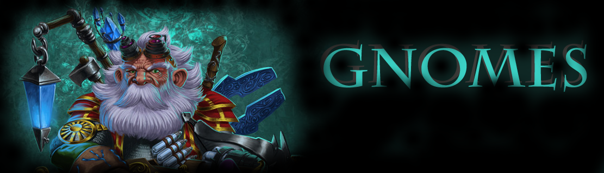

 Gnome Plugin Forum Thread @ Bay12 * Download @ DFFD The Wisdom of the Earth Hidden deep in the mountains, at peace among the creatures of the forests, an ancient and wise race has lived in isolation for generations. Blessed with long life, intense curiosity, and mastery of arts, crafts, and technology, the gnomes have long been content to tinker in their workshops, crafting strange and fantastic inventions for the sheer joy of it, oblivious to the wars and power struggles of the bigger, clumsier races. But the times are changing, and as the kingdoms of man, dwarf, elf and orc continue to expand, even the most secluded corners of the world are no longer safe from prying, curious, and often jealous eyes. Now gnomish ingenuity must be put to more practical ends - for trade, and should the need arise, for defense of their natural home.
|